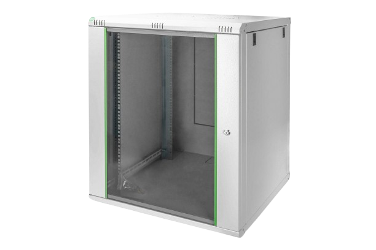
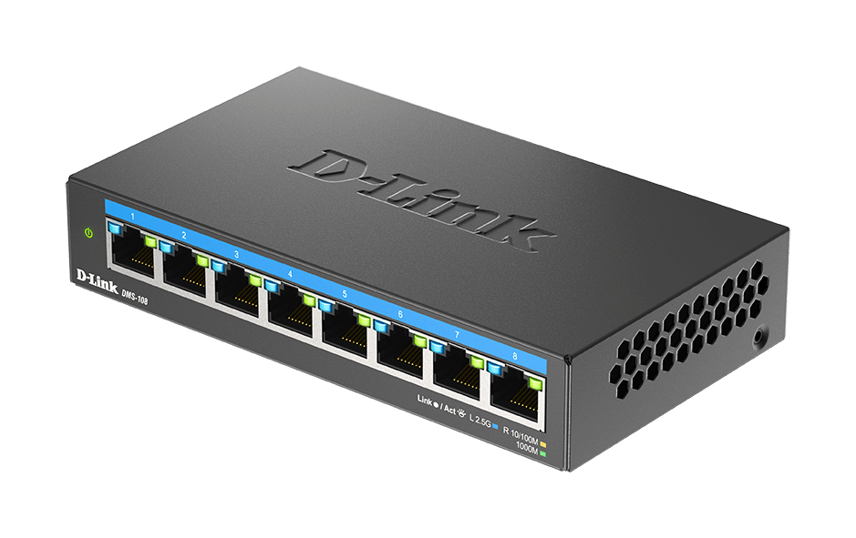
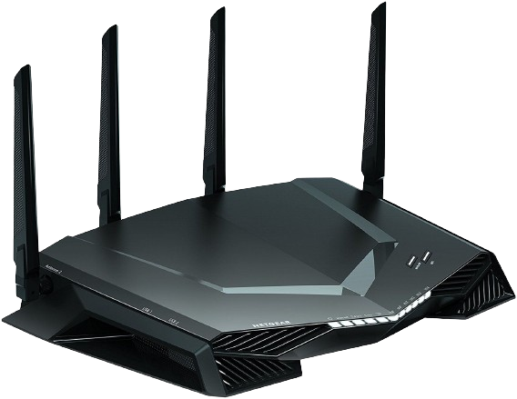

A kis- és közepes vállalati hálózatok
Ezek az eszközök alkotják a kis- és közepes vállalati hálózatok alapjait, és megfelelően konfigurálva biztosítják a hatékony adatátvitelt és hálózati kapcsolatot az üzleti környezetben. Fontos megjegyezni, hogy ezeknek az eszközöknek az optimális működése érdekében szükség lehet egy hálózati adminisztrátor vagy szakember bevonására a megfelelő konfiguráció és karbantartás érdekében.
Kábelrendező szekrény
- Szerep: A kábelek csatlakoztatásának és rendezésének helye. Ide vezetik be a hálózati kábeleket, és innen indulnak a kapcsolatok a számítógépek, eszközök és hálózati eszközök között.
- Jellemzők: Általában rack-be szerelhető, szabványos méretekkel rendelkezik, és címkézett portokkal rendelkezik a könnyebb azonosítás érdekében.
- Csatlakozási módok: A hálózati kábelek általában RJ45 csatlakozókkal vannak felszerelve, amelyeket a patch panel portjaira csatlakoztatnak.
- Alapszintű hálózati beállítások: Nincs igazi beállítása, de fontos, hogy megfelelően címkézzék a portokat az egyszerű hibakeresés és karbantartás érdekében.

Kapcsoló
- Szerep: A hálózatban lévő eszközök összekapcsolásáért felelős. A kapcsoló lehetővé teszi a csomagok címzett eszközre történő továbbítását a hálózaton belül.
- Jellemzők: Több porttal rendelkezik, amelyekhez eszközök csatlakozhatnak. Általában nagy sávszélességet kínál, és intelligens funkciókkal rendelkezhet, mint például a VLAN támogatás.
- Csatlakozási módok: A számítógépek és más hálózati eszközök Ethernet kábellel csatlakoznak a kapcsolóhoz.
- Alapszintű hálózati beállítások: IP címek konfigurálása, VLAN-ok létrehozása, hálózati forgalomirányítás beállítása stb.

Forgalomirányító
- Szerep: Az egy hálózaton kívüli hálózatok közötti adatforgalom irányításáért felelős eszköz. Segít a csomagok továbbításában a különböző hálózatok között.
- Jellemzők: Általában több interfésszel rendelkezik, hogy csatlakozni tudjon különböző hálózatokhoz. Gyakran tűzfalat és egyéb biztonsági funkciókat is tartalmaz.
- Csatlakozási módok: Ethernet kábellel csatlakozik a kapcsolókhoz és más hálózati eszközökhöz, valamint egy vagy több internetes szolgáltatóhoz.
- Alapszintű hálózati beállítások: IP címek konfigurálása az interfészekhez, útvonalak beállítása a különböző hálózatok között, tűzfal beállítások stb.
